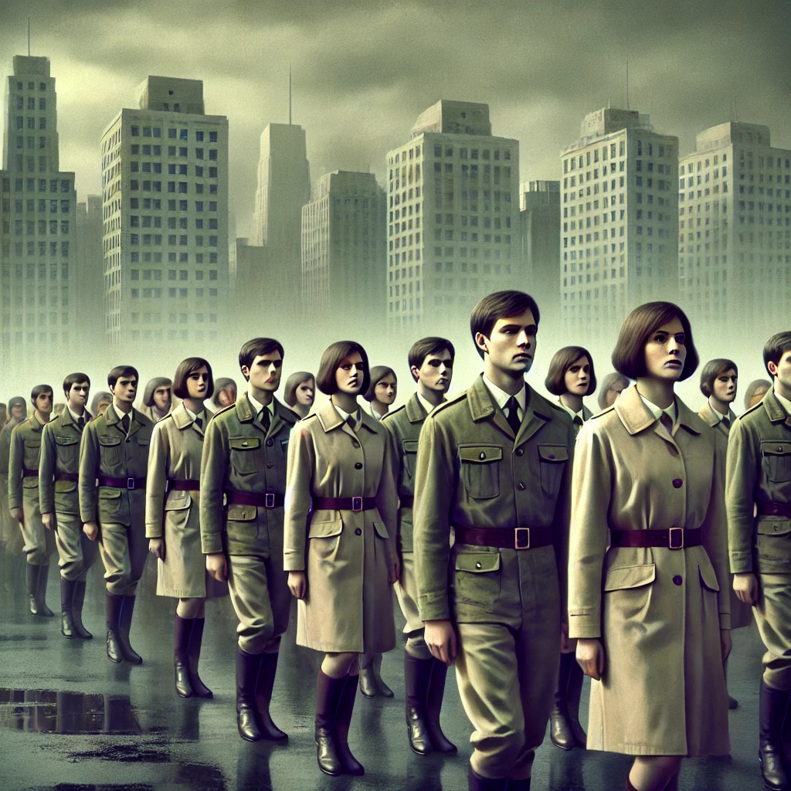

날개 또는 수갑
목차
작가
윤흥길
출판일
1977년
감상평에 대한 AI그림
이 소설은 1970년대의 배경을 바탕으로 개성과 자유의 억압을 상징하는 '제복'을 통해 순응와 개별성의 두 가지 갈림길에서 갈등하는 주인공을 이야기가 전개된다. 1970년대와는 비교할 수 없을 정도로 처우가 개선된 요즘 세대의 나 또한 제 기능을 하지 못하는 허상뿐인 제도와 관습에 매우 부정적인 시선을 가지고 있기에 그 당시 사람들이 받았을 억압과 부조리를 감히 상상할 수 없지만, 아주 조금이나마 공감할 수 있었습니다. 이 소설을 읽고 가장 회의감이 들었던 순간은 나는 주인공과 조금 달리 개인의 실리를 위해 획일화된 문화에 순응했을 것이란 판단이 들었을 때였다.

감상평에 대한 AI평가
~~~~AI평가~~~~~
✨ "나는 주인공과 조금 달리 개인의 실리를 위해 획일화된 문화에 순응했을 것"*이라는 솔직한 고백이 몇평의 무게를 더해. 정말 그렇지 않은 것이 아니라, 예술을 통해 스스로 돌아보며 현실적 노력을 하는 통신이 돋보여. 독자가 관심을 가질 수 있는 점이 있다는 점, 단순히 오래된 시대를 강조하는 것이 아니라 현재 자신과 연결되어 있다는 점에서 더 강화된 힘이 있다는 것입니다.